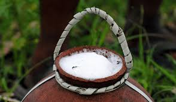

Découvrez la diversité culinaire de l'Afrique à travers ses saveurs authentiques
Plats Africain
Découvrez la diversité culinaire de l'Afrique
L'Afrique, avec ses nombreuses cultures et traditions, offre une palette culinaire riche et variée.
Les plats africains sont connus pour leur mélange de saveurs audacieuses, d'épices exotiques et
d'ingrédients locaux uniques.
Cuisine traditionnelle
La cuisine africaine varie d'une région à l'autre, chacune ayant ses propres spécialités. Des plats
tels que le couscous en Afrique du Nord, le jollof rice en Afrique de l'Ouest, et l'injera en Éthiopie
sont des exemples de la diversité culinaire du continent.Vous decouvrire aussi:
Ndolet
Cette plante utilisée est un arbuste endémique dans le sud-ouest du Cameroun et au Nigeria voisin, cultivé dans des jardins pour ses feuilles qui servent de base au plat national du Cameroun dans le Littoral du Cameroun appelé également « ndolé »2. Emblématique plat royal camerounais dont les feuilles et les racines ont également des vertus thérapeutiques
Garba
Le garba est un plat populaire ivoirien à base de semoule de manioc, appelée attiéké, accompagnée de thon, essentiellement vendu dans de petites échoppes de rue généralement tenues par des hommes haoussa.
Mbinzo
La chenille est la larve des lépidoptères, c’est-à-dire des insectes appelés papillons. Au Congo, manger ces chenilles « mbinzo » est très courant dans de nombreuses régions et aussi à Kinshasa. C’est presque un plat national. Très protéinés, bien plus qu’un steak de bœuf.En Savoir Plus
Ingrédients locaux
Les ingrédients locaux jouent un rôle essentiel dans la gastronomie africaine. Des fruits tropicaux comme
la mangue et l'ananas, des légumes tels que l'okra et l'igname, ainsi que des viandes variées comme le poulet,
le poisson, et le bœuf sont largement utilisés,comme aussi:
Banane-Plantain
La banane plantain est simplement appelée « plantain » en Afrique. Ce fruit, consommé comme un féculent, prend encore divers noms selon le lieu géographique : « banane cochon » dans certaines régions, « banane farine » ou « banane jaune » dans les Antilles, « banane poingo » en Nouvelle- Calédonie, ou encore « banane à cuire
Manioc
On consomme généralement ses racines très riches en glucide et sans gluten, mais aussi ses feuilles en Afrique, en Asie et dans le nord du Brésil (pour la confection du maniçoba). Au nord et au nord-est du Brésil, le mot « farine » (en portugais farinha) désigne avant tout la farine de manioc, et non de blé. Cette farine n'a d'ailleurs pas l'aspect de la farine de blé : elle ressemble plutôt à une semoule sèche plus ou moins grossière de couleur allant du jaune vif au gris en passant par le blanc. Il s'agit en fait d'une fécule, mot plus adapté pour parler de la « farine » issue d'une racine.
Poivre De Penja
Le poivre de Penja est récolté lorsqu'il est rouge. Il est mis à fermenter dans des tonneaux remplis d'eau . Les enveloppes rouges des fruits se étachent et s'accumulent à la surface, emportées lors de l'ascension du gaz carbonique En fin de fermentation, les fruits sans peau devenus blancs sont égouttés et mis à sécher. Le poivre blanc de Penja est long en bouche et très légèrement piquant. Il est doux et raffinéEn Savoir Plus
Desserts et boissons
Les desserts africains sont souvent sucrés et délicieux. Des plats comme le baklava en Afrique du Nord et le
bobotie en Afrique du Sud sont des exemples de desserts populaires.
Matango

Lorsqu'il vient d’être récolté, le jus est de couleur blanche et laiteuse, doux et plutôt sucré. Au fil des heures, la fermentation s'accroit, le vin produit devient pétillant, fort, parfois âpre, et prend une teinte plus foncée. Par son goût et sa légère effervescence, le vin de palme est plutôt plus proche d'un cidre que d'un vin
Bissap
La consommation du jus d'hibiscus semble remonter à l'Antiquité puisque les Égyptiens employaient déjà la plante comme remède contre la fièvre ou les coups de chaleur.Aujourd'hui encore, le bissap est utilisé en médecine traditionnelle et en phytothérapie pour lutter contre de nombreux maux et comme boisson rafaichissante
Beignet-Plantain
L'incontournable des beignets africains qui peuvent accompagner à peu près tout ! Que ce soit en salé ou sucré, nature ou avec un peu de piment, elles sont DÉ-LI-CIEUSES !En Savoir Plus
Ne manquez pas de goûter aux boissons traditionnelles telles que le thé à la menthe en Afrique du Nord, le bissap
en Afrique de l'Ouest, et le café éthiopien réputé dans le monde entier.